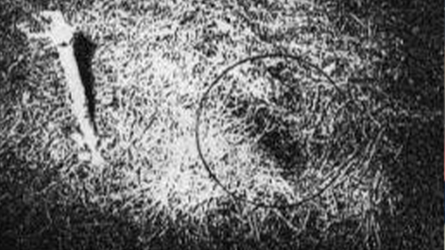

Investigación Ovni


| Los reportes | ||
|---|---|---|
| Fecha | Descripción | Evidencia |
| El 26 de diciembre de 1980 |
En la Base Aérea de Woodbridge, se informaron avistamientos de luces extrañas en el bosque cercano. El personal militar, incluidos Halt y Burroughs, investigó los avistamientos y descubrió marcas en el suelo y árboles dañados en un área del bosque conocida como Rendlesham Forest. |
 |
| el 27 de diciembre de 1980 |
Halt realizó una grabación de audio mientras investigaba los avistamientos. En la grabación, se escuchan observaciones detalladas sobre luces intermitentes, objetos voladores y luces que parecían "caer como estrellas". |
|
Aunque las explicaciones convencionales incluyen aviones, satélites y fenómenos naturales, el caso de Rendlesham Forest sigue siendo un enigma no resuelto y es citado por muchos ufólogos como evidencia de encuentros cercanos con OVNIs.